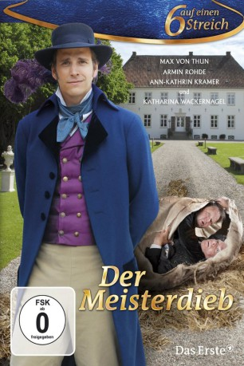

#10326 Sechs auf einen Streich - Der Meisterdieb
Alternativ: Der Meisterdieb (Englischer Titel)
 
 IMDB-Wertung: 6.6 / 10
IMDB-Wertung: 6.6 / 10  Metascore: 0
Metascore: 0 
Es war einmal ein Junge, der nach vielen Jahren in sein Elternhaus zurückkehrte. Doch die Freude der Eltern wird getrübt: Sohn Robert ist ein Dieb geworden und der Graf droht ihm mit dem Galgen, außer er besteht drei Diebesproben. Wie der Meisterdieb diese seltsamen Aufgaben bewältigt und außerdem Freiheit und Anerkennung erringt, davon handelt diese gewitzte Neuverfilmung des Grimmschen Märchens.
Jahr: 2010
Dauer: 58 Minuten
FSK: 0
Land: Deutschland Studio: ARDTonspuren:
Untertitel:
Auflösung: 720p (1280x720) Größe: 1945 MB
Genre: Fantasy, Familie
Regisseur: Christian Theede
Drehbuch: Jacob Grimm, Wilhelm Grimm, Dieter Bongartz, Leonie Bongartz
Soundtrack: Peter W. Schmitt
Darsteller:
 Armin Rohde als Graf Gustav
Armin Rohde als Graf Gustav- Katharina Wackernagel als Nele
 Gitta Schweighöfer als Roberts Mutter Svea
Gitta Schweighöfer als Roberts Mutter Svea- Max von Thun als Meisterdieb Robert
- Ann-Kathrin Kramer als Gräfin Greta
- Anna Hausburg als Josefine
- Hans-Peter Korff als Professor Lichtenberg
- Fritz Roth als Pfarrer Rafael
- Andreas Schröders als Küster Gabriel
- Joachim Dietmar Mues als Roberts Vater Heinrich
- Mirko Lang als Soldat Knut
Datei: X:\Märchen\Sechs auf einen Streich - Der Meisterdieb (2010, FSK0, 1280x720).mkv seit 29.12.2018
Festplatte: Kinder-Filme+Trick
 Es gibt insgesamt 61 Filme in der Gruppe 'Märchen'
Es gibt insgesamt 61 Filme in der Gruppe 'Märchen'